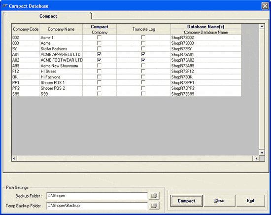

This option is used to optimize the database’s storage by removing the redundant logs, records etc.
How to reach: Housekeeping > Compact
The Compact Database window with Compact option activated is displayed.

Company Code: Displays all the company codes of available companies.
Company Name: Displays the respective company name.
Compact Company: Check to select the database for compact function.
Note: If optional databases like Secondary and EIS are available then you may also include them for compacting by checking accordingly, as done for Company database.
Truncate Log: Check to select the database for truncate log function.
Caution: On executing the Truncate Log the SQL log backup is deleted. Use this option only when the size of the SQL logs is occupying large space.
Database Name(s) Company Database Name: Displays the databases available for Compact function.
Path Settings
Backup Folder: Select a folder from the file browser option to take a backup. A backup is taken before performing compact function, on request.
Temp Backup Folder: Select a folder from the file browser option to take a temporary backup. A backup is taken before performing compact function, on request.